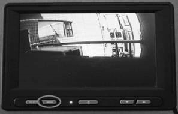
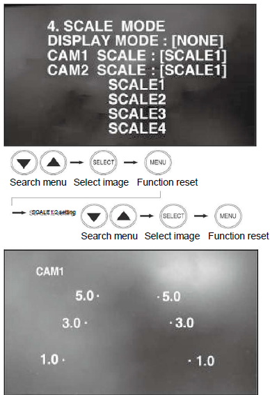
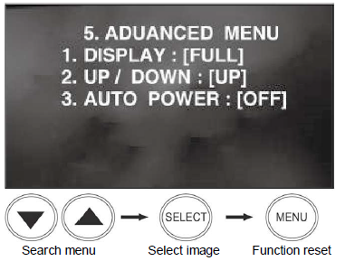

b. Operation Method
- ▶ Color tone control

-
NORMAL / MIRROR

- This function turns the camera image right ↔ left.
-
TRIGGER DELAY

- If 2 trigger signals are activated, the respective trigger sources can be selected.
- When trigger signal is activated, the selected image appears in the screen.
- Each trigger signal can be set up with 0~20 seconds of delay.
-
CAMERA NAME

- Name of each camera can be registered and displayed in the screen OSD.
-
SCALE MODE
 - To show distance together with the camera image on the monitor, this function controls figures and dots of a certain size.
- Other scale modes of CAM1~CAM2 can be set up, which can be turned ON/OFF in DISPLAY MODEP.
- SCALE1 and SCALE2 are indicated with adjustable figures.
- When trigger signal is activated, the scale OSD set up in the screen appears.
- This is simply an electrical expression of the distance from the truck.
-
ADVANCED MENU
 - DISPLAY
- FULL: images are displayed in 16:9 ratio.
- NORMAL: images are displayed in 4:3 ratio.
- UP/DOWN
- Turns images upside down.
- AUTO POWER
- If AUTO POWER is set to ON, the monitor turns ‘AUTO ON’ when the vehicle power is turned on.
- If AUTO POWER is set to ONF, the monitor does not operate when the vehicle power is turned on.
- DISPLAY
-
AUTO SCAN

- If AUTO SCAN is set to ON, images are displayed in the sequence of CAM1→CAM2.
- The duration of an image display can be set to 0~20 seconds. ‘0’ setting eliminates the image.
- Press the SELECT button to stop repeating images, and press it again to see the images repeatedly.